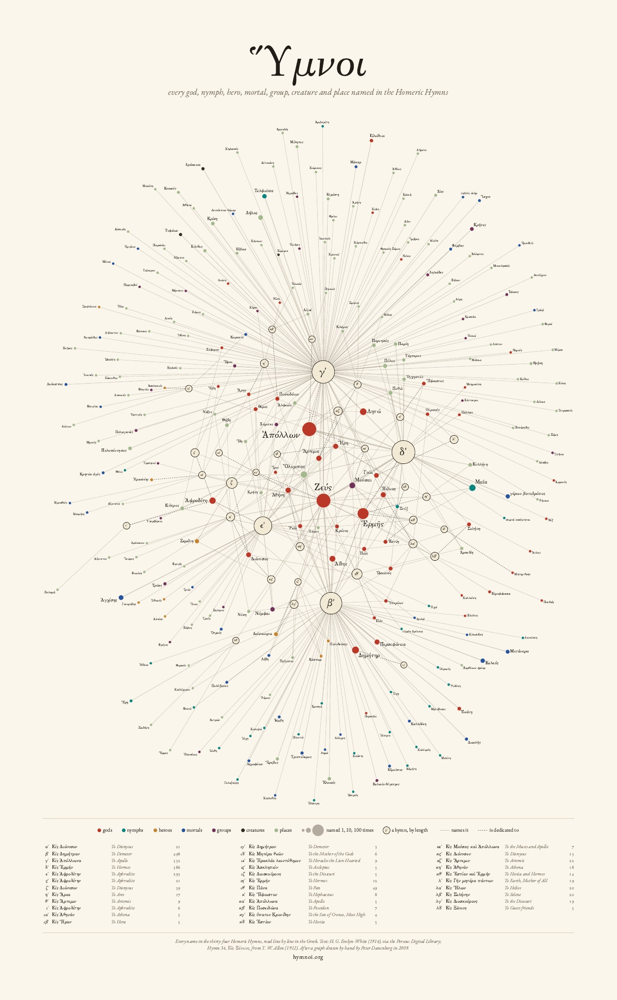
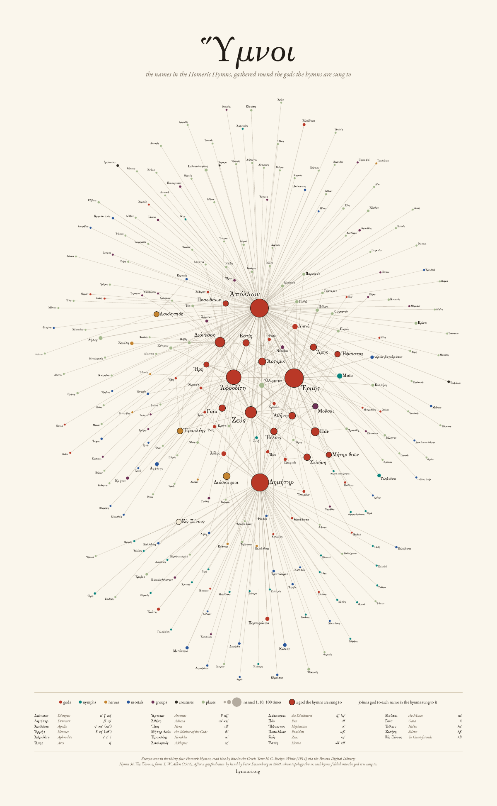
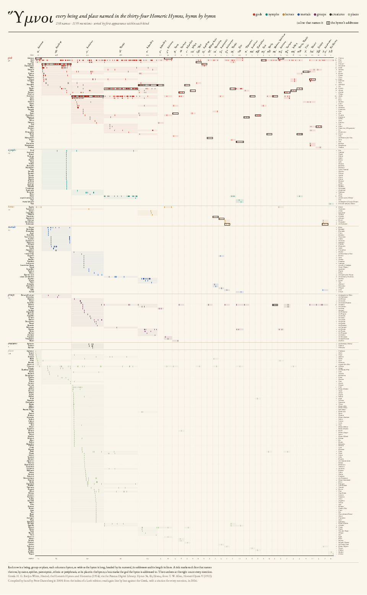
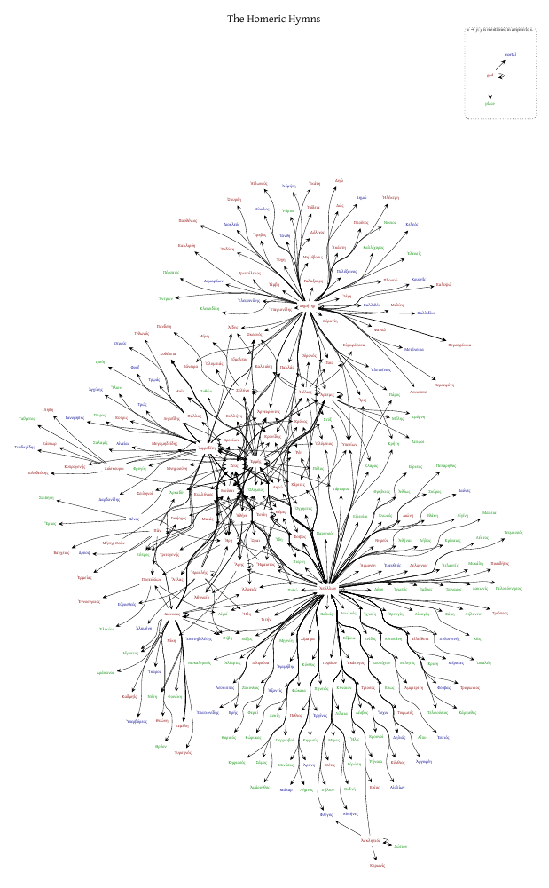

Ὕμνοι, hymns as hubs 2026
The graph, set for paper: the thirty-four hymns on a ring, each with the names that are its own fanned around it, the names they share drawn to the middle, where Zeus, Apollo, Hermes, the Muses and Olympos meet. All 258 names are labelled, in Greek, sized by how often the hymns name them.
24 × 38.83 in, the golden ratio of the 2009 print, laid out by tools/poster.js with a fixed seed,
so it can be regenerated whenever the data changes.


Ὕμνοι, gods as hubs 2026
The same names without the hymns as nodes: each hymn folded into the god it is sung to, as the 2009 poster drew it. Twenty-three hubs (Apollo, Demeter, Hermes and Aphrodite the largest; Zeus large only because the others name him 165 times), each with its own names fanned around it, the shared ones between. Fewer discs, less noise; what it loses is which hymn says what.
24 × 38.83 in, from the same data and program (node tools/poster.js --gods).


The matrix 2026
Every name down the side, grouped by kind; the hymns across the top, each column as wide as the hymn is long, with a tick at every line that names someone. Read down a column for how crowded a hymn is (the Hymn to Apollo names 79 places, more than the other thirty-three hymns together); along a row for how far a name reaches (Zeus is named in twenty-four of the thirty-four).
PDF, columns by length
PDF, equal columns a disc per name and hymn
(preview)


The first poster 2009
Peter Danenberg drew the first graph by hand in 2009 from the index of names at the back of a Loeb edition: an edge from each god to every name in that god's hymns, 433 of them, laid out by Graphviz and printed at Kinko's, and given to friends when they moved from Tyrella Avenue to Colorado Place. This is the 2020 render of the same graph.
Checked against the Greek in 2026, 422 of its 433 edges stand; eight are in a different hymn, every one a misread Roman numeral (XVIII for XXVIII, XXI for XI, …); three names are not in this text at all.
PDF vector
Colours: pigmenta, from pigments Greek painters used (cinnabar, verdigris, yellow ochre, Egyptian blue, murex purple, carbon black, green earth), measured for colour-blind readers and for coated-paper CMYK; the sheet gives the CMYK values for a printer.